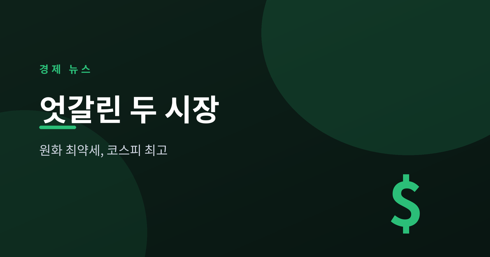
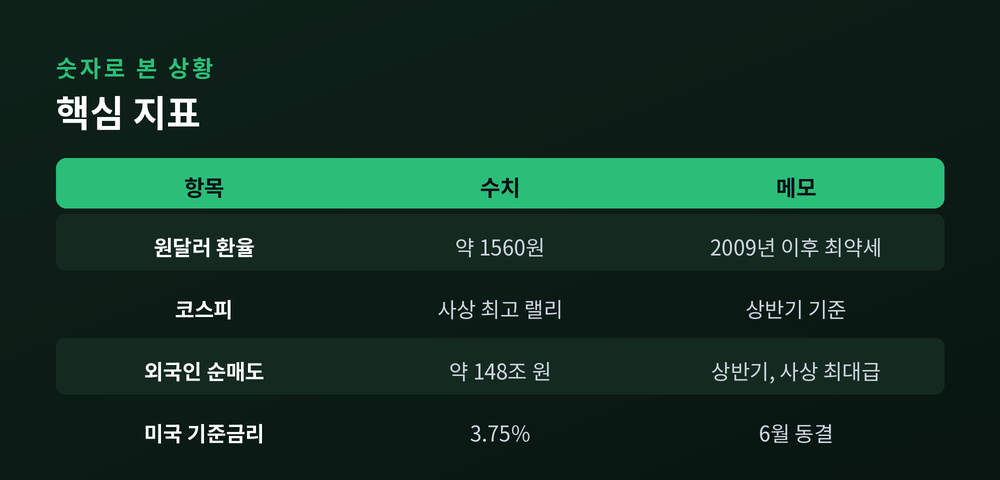
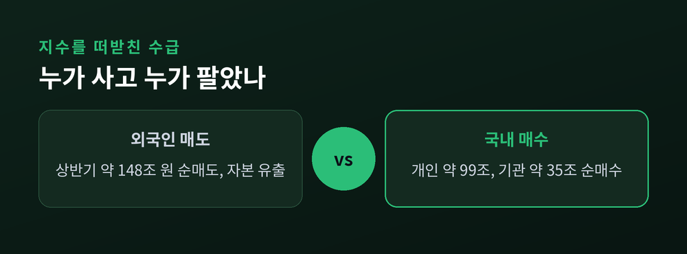
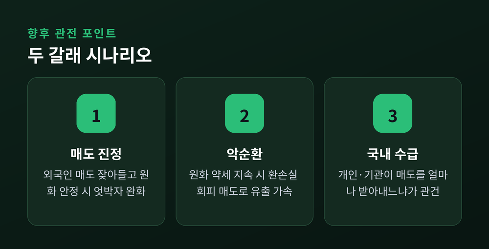

엇갈린 두 시장

이번 글에서는 최근 국내 금융시장의 독특한 풍경을 정리해 보겠습니다. 원화 가치는 2009년 이후 가장 낮은 수준까지 내려갔는데, 정작 코스피는 상반기 사상 최고 랠리를 펼쳤습니다. 외국인은 역대급으로 주식을 팔았는데도 지수는 올랐습니다. 왜 이런 엇박자가 나타났는지 차분히 짚어 보겠습니다.
원/달러 환율은 6월 초 1,560원 안팎까지 올랐습니다. 원화 가치로 보면 글로벌 금융위기 여진이 남아 있던 2009년 3월 이후 가장 약한 수준입니다.
같은 기간 코스피는 오히려 사상 최고 랠리를 이어갔습니다. 6월 초에는 8,600선을 넘겨 마감하기도 했습니다.
더 눈에 띄는 대목은 외국인의 움직임입니다. 상반기 동안 외국인은 코스피에서 약 148~150조 원을 순매도했습니다. 사상 최대급 규모입니다. 그런데도 지수는 최고치를 새로 썼습니다.

보통은 증시가 강하면 원화도 강해집니다. 외국인 자금이 들어오면서 주식과 통화가 함께 오르기 때문입니다. 그런데 이번에는 정반대로 움직였습니다.
열쇠는 수급에 있습니다. 외국인이 판 물량을 국내 투자자가 받아냈습니다. 상반기 개인은 약 99조 원, 기관은 약 35조 원을 순매수하며 외국인 매도를 메웠습니다.
외국인이 주식을 팔면 그 대금을 달러로 바꿔 나갑니다. 이 과정에서 달러 수요가 늘어 환율은 밀려 올라갑니다. 지수는 국내 매수가 지켰지만, 통화 가치는 그러지 못한 셈입니다.
외국인 매도의 배경으로는 상반기 급등 이후의 차익 실현, 원화 약세에 따른 환손실 회피, 반도체 대형주에 대한 밸류에이션 우려가 함께 꼽힙니다.

관건은 외국인 매도가 언제 잦아드느냐입니다. 매도가 진정되고 원화가 안정되면 두 시장의 엇박자도 완화될 수 있습니다.
반대의 경우도 있습니다. 원화 약세가 이어지면 외국인은 환손실을 피하려 더 팔고, 그 자금이 빠져나가며 환율을 다시 밀어 올리는 악순환이 생길 수 있습니다.
대외 환경도 변수입니다. 미국 연준은 6월 기준금리를 3.50~3.75%로 동결했고, 강달러 흐름이 아시아 통화 전반을 누르고 있습니다. 여기에 지정학 긴장과 반도체 업황이 겹쳐 있습니다.
결국 국내 투자자가 언제까지 외국인 매도를 받아낼 수 있는지가 지수 방어의 핵심 변수로 남습니다.
※ 이 글은 정보 제공을 위한 해설이며 투자 권유가 아닙니다. 특정 상품이나 매매를 권하지 않습니다.

정리하면 이렇습니다. 통화 시장과 주식 시장이 서로 다른 신호를 보내는, 흔치 않은 국면입니다. 지수는 국내 매수가 지켰지만, 통화의 약세는 여전히 무겁게 남아 있습니다.
핵심 메시지는 하나입니다 — 지금의 코스피 강세는 외국인이 아니라 국내 투자자가 떠받친 결과입니다.
두 시장의 엇박자가 다시 하나의 방향으로 모이는 순간, 시장의 진짜 무게중심이 드러날 것입니다.